| 日付 | 2011年12月11日（日） |
|---|---|
| 山域 | 道志山塊 |
| メンバー | 家族（妻、長女・0歳） |
| 山行形態 | 子連れ日帰り |
| アクセス | 車 |
| ルート (Map) | 札金沢沿い駐車場→九鬼山→弥生峠→みゆき尾根→札金沢沿い駐車場 |
富士山の展望を求めて九鬼山へ行ってみることにする。
以前、この山には登ったことがあるが、
その時は天気が悪く、藪が生い茂っていて苦労した記憶があった。
本日は快晴のため、美しい富士山が望めそうだ。
札金沢沿いの道で九鬼山への登山道が二岐に分かれるところに駐車場がある。
今回はここの駐車場に車を停めて九鬼山を目指すことにする。
8:49 札金沢沿い駐車場到着。標高420m。
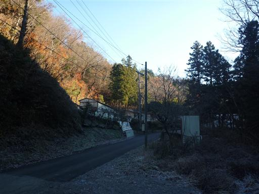
今朝は非常に寒い。地面は霜で覆われている。
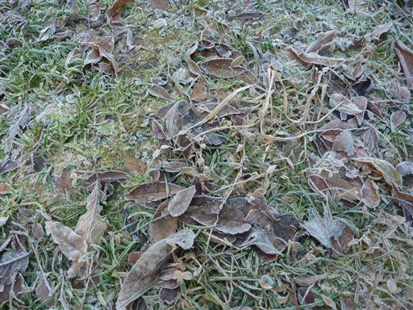
車道をまっすぐ進んで沢沿いの道から九鬼山を目指すコースもあるが、
今回は沢を渡って、尾根コースから九鬼山を目指すコースを歩く。
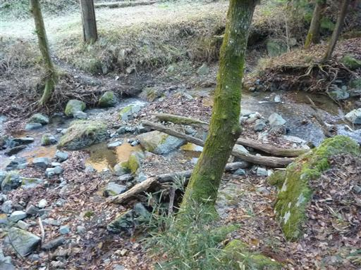
静かな樹林帯の中を登っていく。
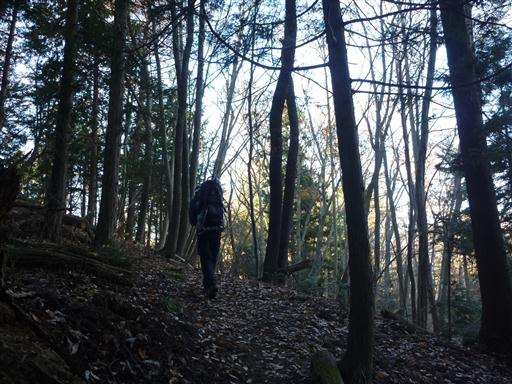
歩き始めてしばらくすると展望が大きく広がる。
左右に走っているのはリニア実験線だ。

富士山の展望台である三ツ峠山も目立っている。
山頂部は若干雪が積もっているようだ。
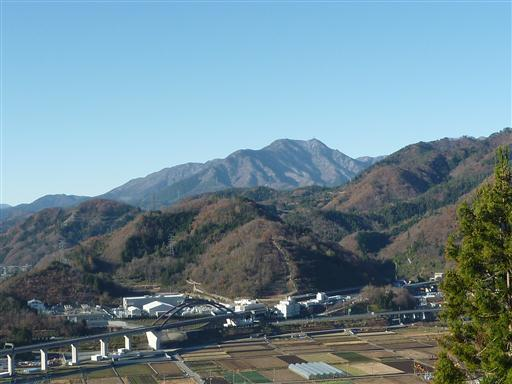
この辺りは松の倒木がたくさん転がっている。
松くい虫だろうか？

まだ立っている木も枯れかかっていて元気がない。
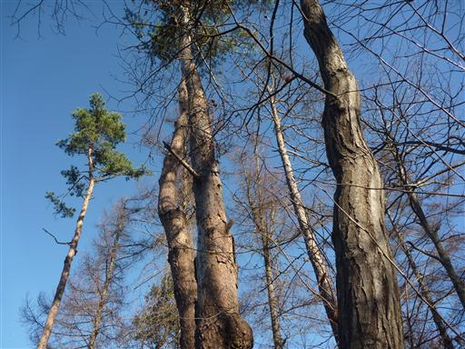
急坂登山道と新登山道の分岐の標識があるが、
急坂登山道の方は全く踏み跡がない。
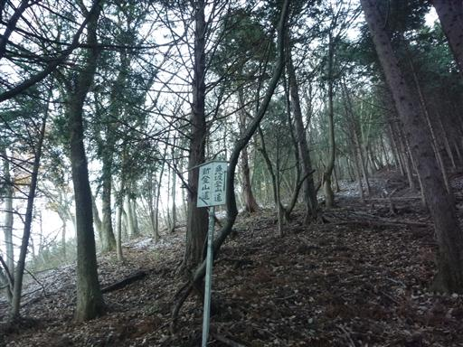
しばらく登っていくと若干雪が出てきた。
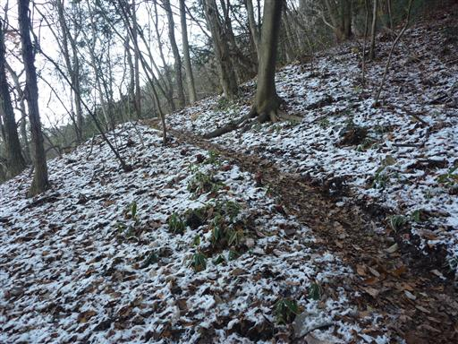
途中で展望台への分岐点があったので寄り道してみる。
ここからも富士山の素晴らしい眺めが得られる。
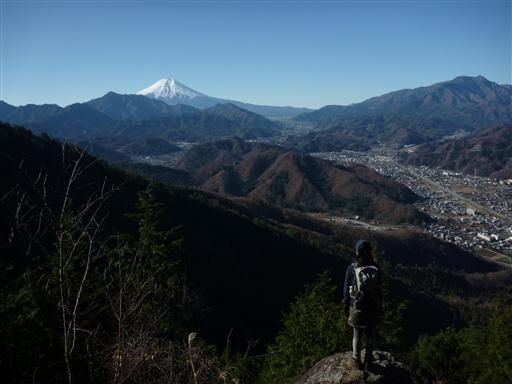
10:35 九鬼山山頂到着。標高970m。
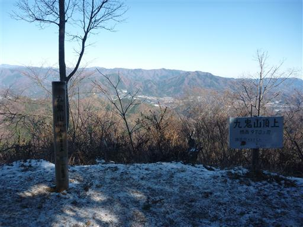
山頂は富士山方面の展望がなく、北面のみ展望が得られる。
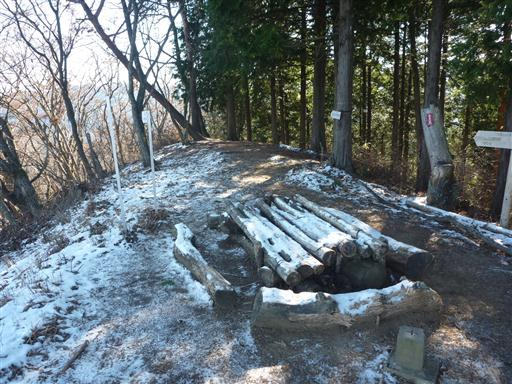
九鬼山山頂から望む中央線沿線の山々。遠くに雲取山が見えている。
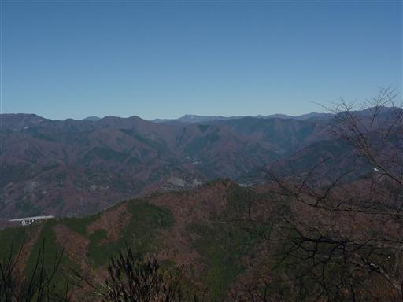
山頂から少し下ったところに富士山の展望が良いところがあるので、
ここで昼食休憩をとることにする。
大勢の登山客が集まってくる。
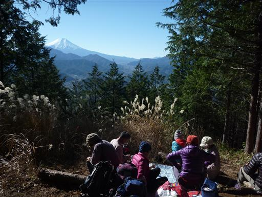
昼食をとって下山を開始する。
下山は弥生峠経由で禾生駅方面に下ることにする。
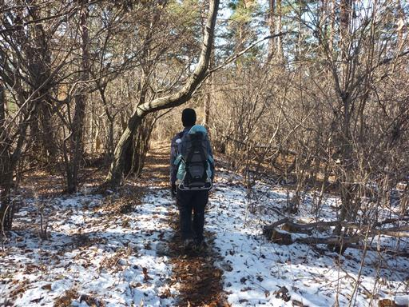
山々の背後に微かに南アルプスが見えている。
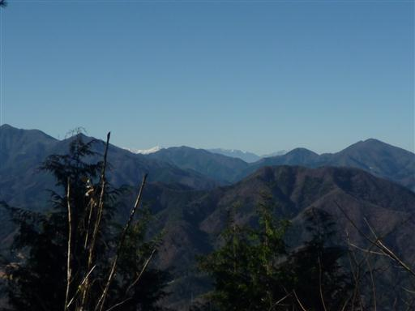
弥生峠に到着。
ここでコースは2つに分かれる。みゆき尾根コースは地図では点線コースだが、
こちらの方がコースタイムが10分短いので、こちらを選ぶことにする。
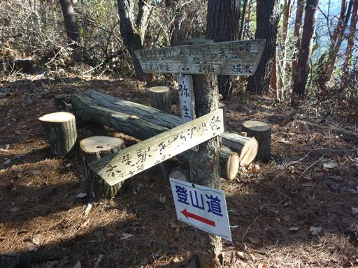
こちらの道は歩く人が少ないのか、
木の枝が左右から覆いかぶさっていて極めて歩きにくい。
冬はともかく、夏は通行不可能だろう。
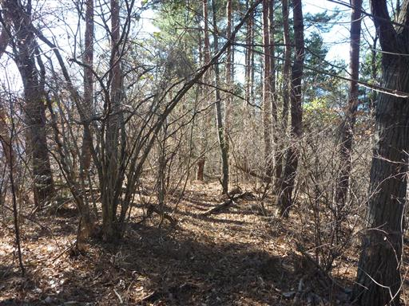
踏み跡は非常に細く、所々途切れているところもある。
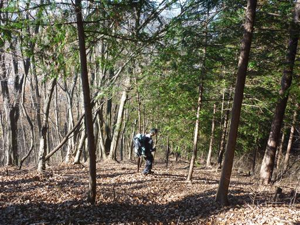
コース上を歩いているのか、間違っているのかよく分からない状態が続いたが、
しばらく歩くと古い標識が出てきたので一安心。
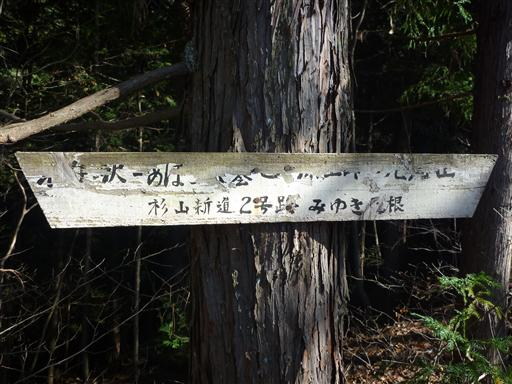
それでも道には枝が散らばっていて整備がされていない。
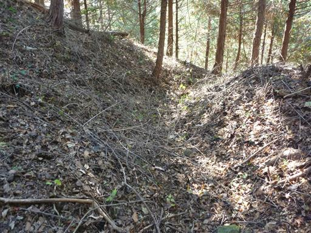
しばらく歩くと、ようやく別の登山道と合流する。
自分たちより後に出発したはずのパーティと一緒になったので、
結局、多くの時間がかかってしまったようだ。
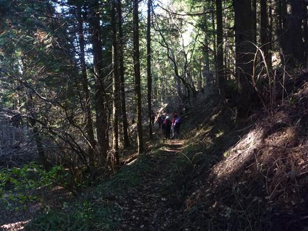
下山。のどかな風景の中を歩いていく。
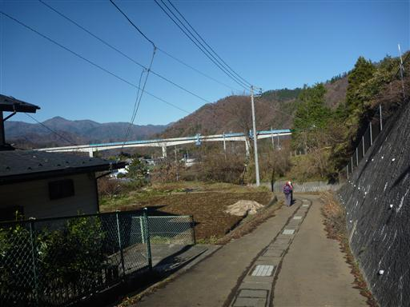
落合水路橋をくぐる。
この橋は1907年竣工の水路橋で国登録有形文化財に指定されている。

車道を一駅分歩いて車を停めたところに向かう。
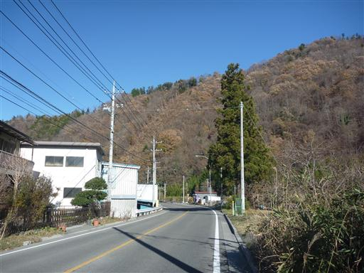
2両編成の富士急列車が走っている。
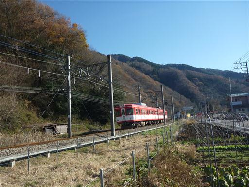
日が傾いてきて、富士山が光っている。
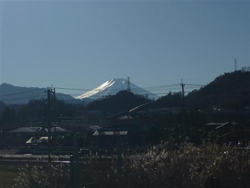
13:14 札金沢沿い駐車場到着。
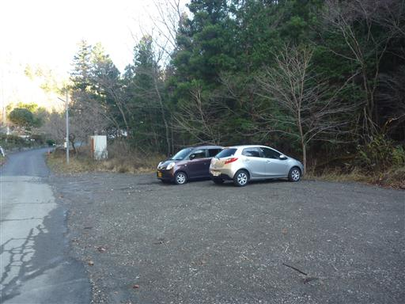
帰りに山梨県立リニア見学センターに寄る。
無料の施設で、リニア走行試験の見学などができる施設なのだが、
試験は今年9月で一旦終了したそうだ。
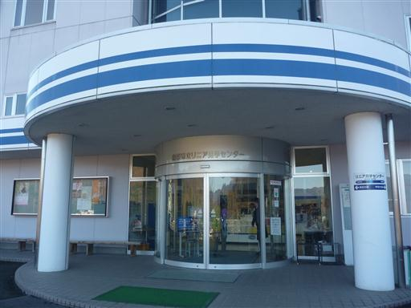
中にはリニアの模型が展示されている。
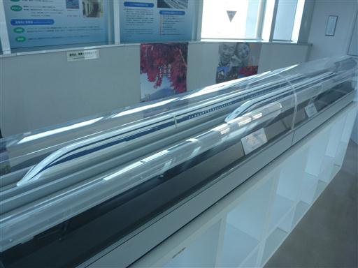
リニア実験線。以前はここで試乗会が行われていた。
リニア開通は当分先だ。
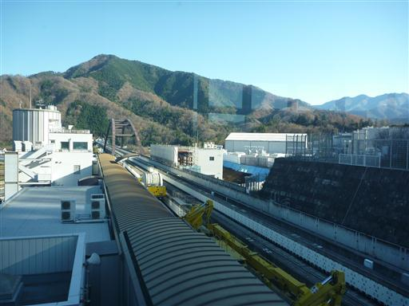